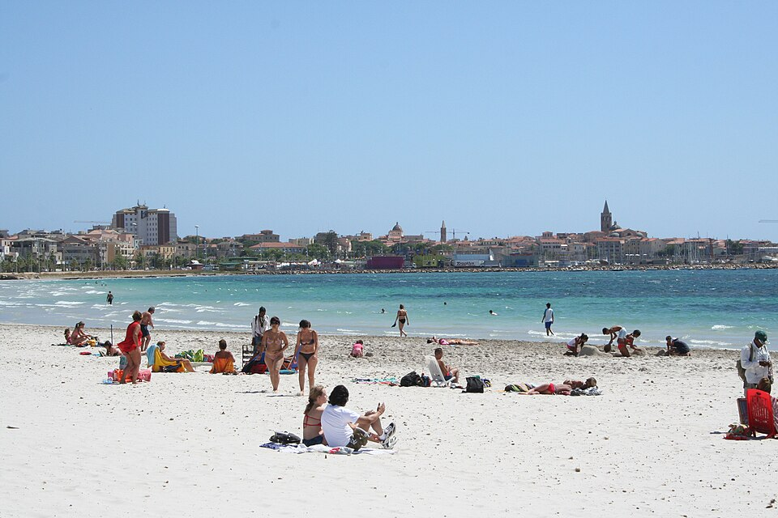
08 / 11
Sardegna
Una presenza tra luoghi diversi, uniti dalla voglia di vivere lo spettacolo.
Mantova è la città principale; Alghero e Malta sono le altre aree di attività indicate. Le altre città qui raccolte compaiono nel materiale condiviso in relazione a eventi e progetti: la presenza operativa in ciascuna va confermata.
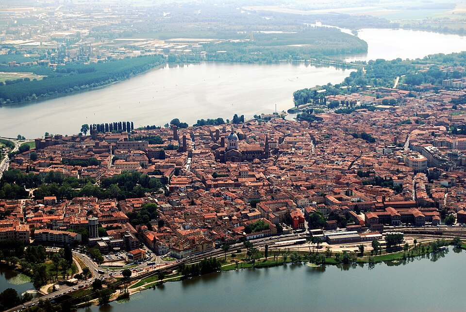
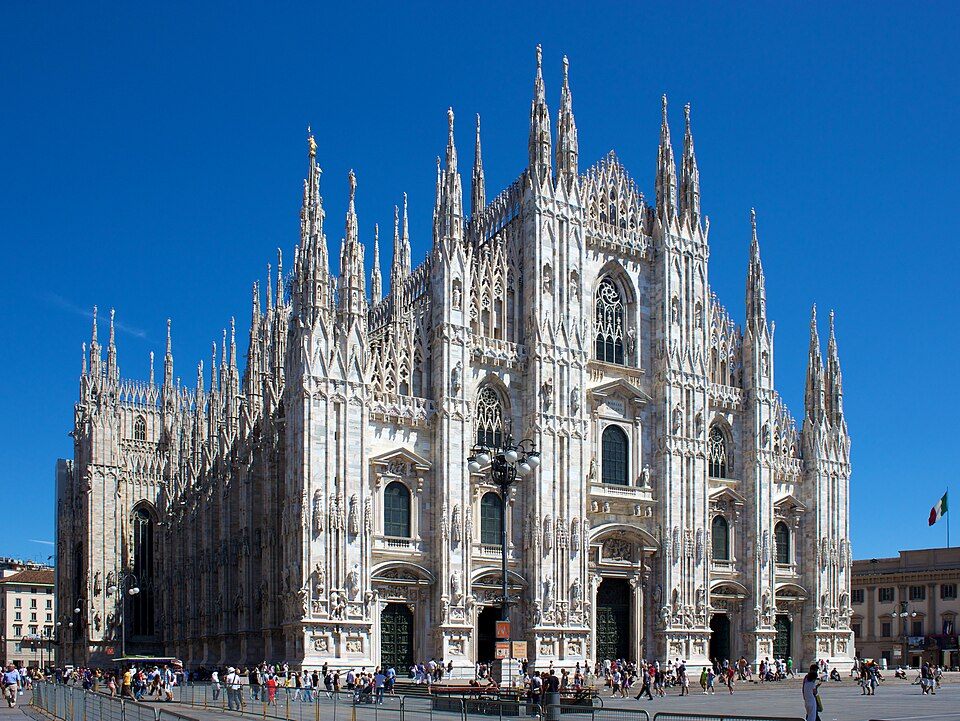
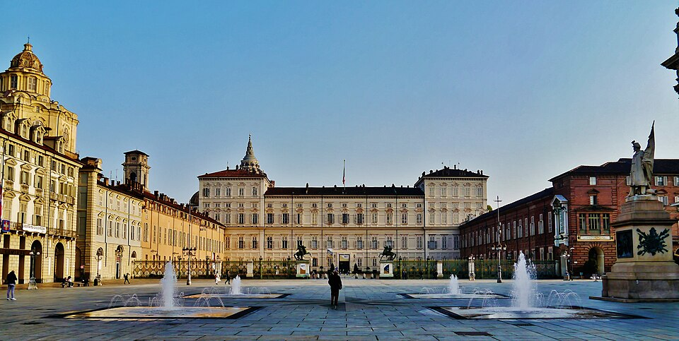
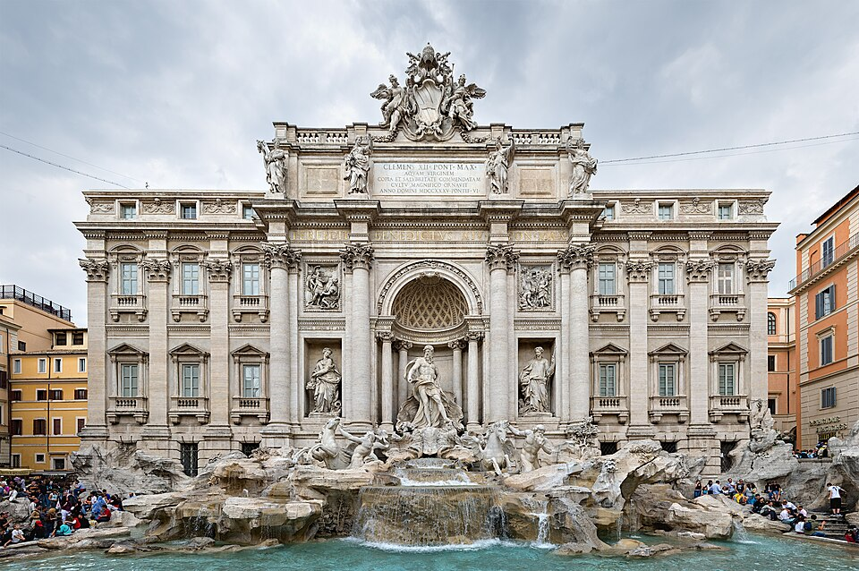
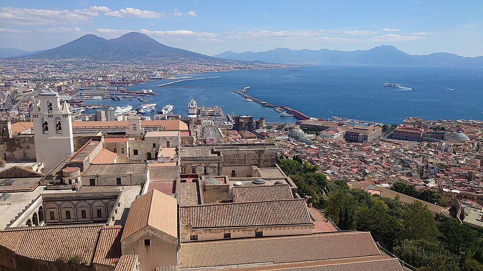
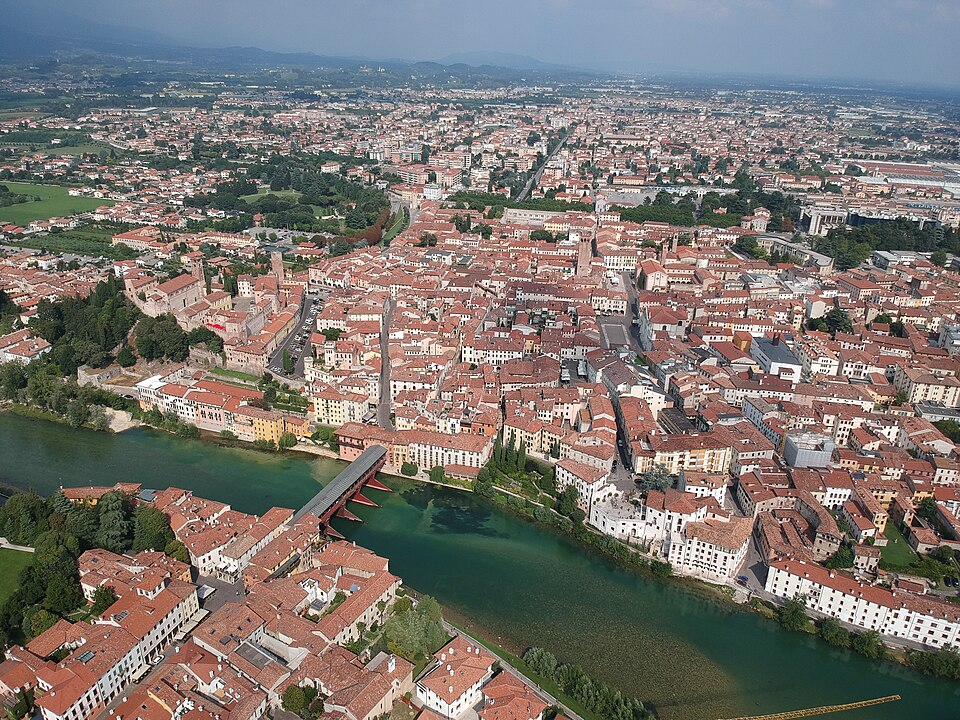
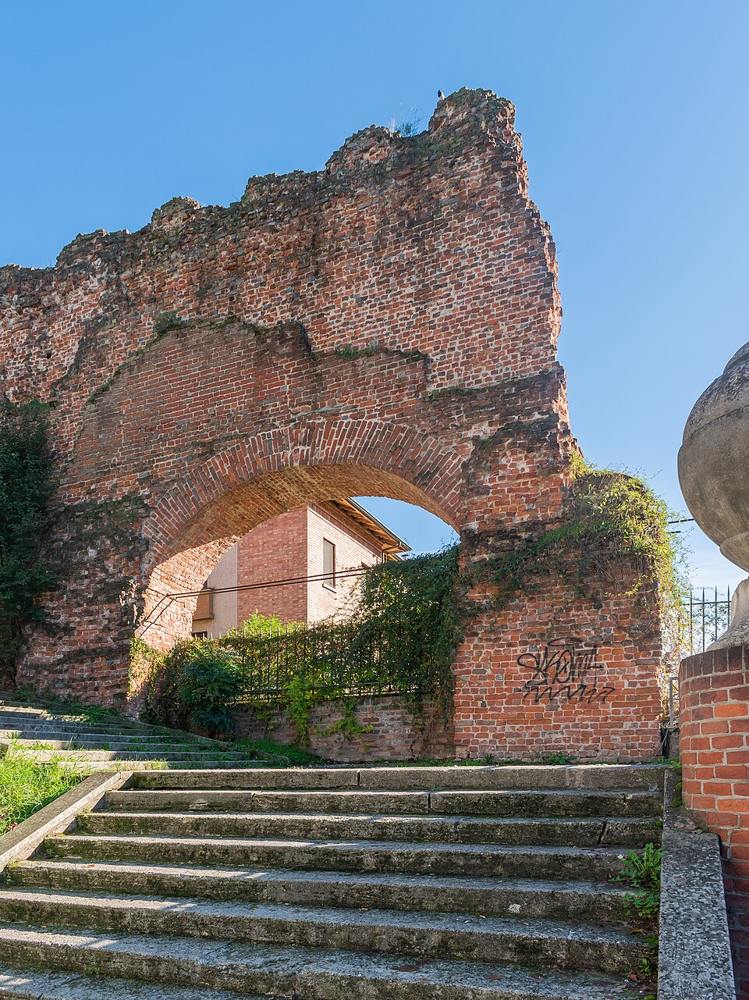

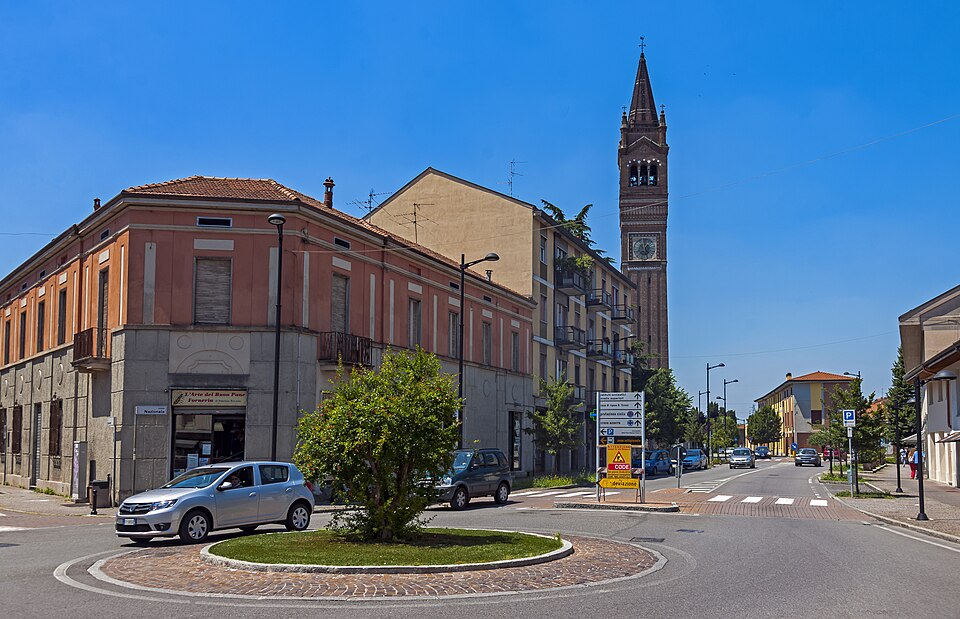
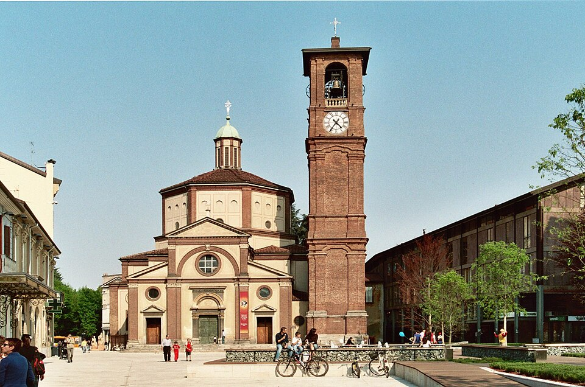
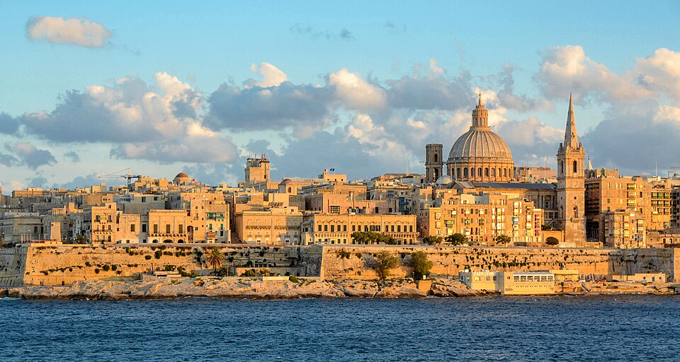
Scopri cosa succede dal vivo nei nostri territori.
Vai agli eventi